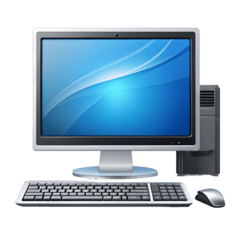
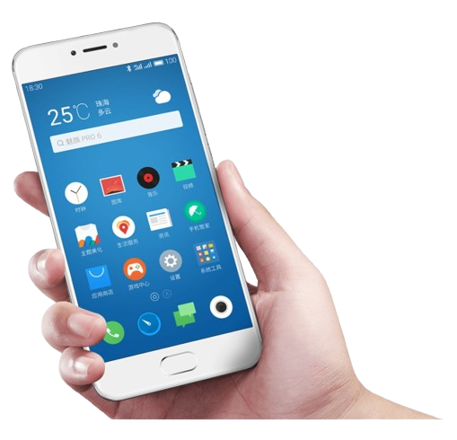
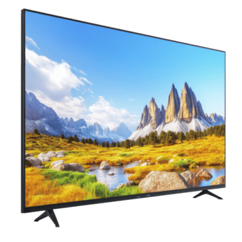

Computadador
Um computador de mesa, ou desktop, é uma máquina projetada para ficar fixa em um local, geralmente sobre uma mesa ou escrivaninha.
Onde os fãs de tecnologia se encontram.

Um computador de mesa, ou desktop, é uma máquina projetada para ficar fixa em um local, geralmente sobre uma mesa ou escrivaninha.

O celular (ou smartphone) é um computador de bolso projetado para a mobilidade total.

a Televisão é um dispositivo focado principalmente no entretenimento visual e auditivo compartilhado, projetado para ser o centro das atenções em uma sala ou quarto.